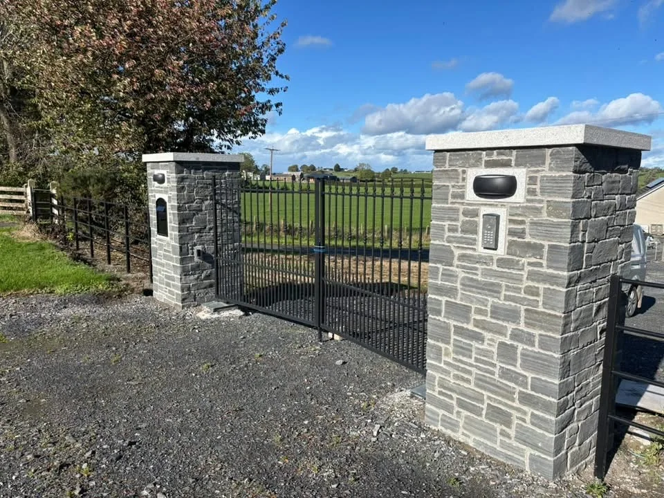

MJB STONEMASONRY · LURGAN · IRELAND NORTH & SOUTH
Stone walls & gate piers
Define an entrance or garden space with masonry that works with the surrounding walls, paving and landscape.
Request a quote ↓WHAT WE CAN HELP WITH
Stone walls & gate piers
- Stone entrance piers
- Garden and boundary walls
- Coping and curved features
What to include in your enquiry
Include photos of the access, approximate lengths and heights, and any gate dimensions or hardware details you already have.
Discuss your project →Related services
LURGAN · IRELAND NORTH & SOUTH
Tell us about
your project.
Share your town or county, the stonework you need and any access restrictions. Add photos in WhatsApp if they help explain the job.